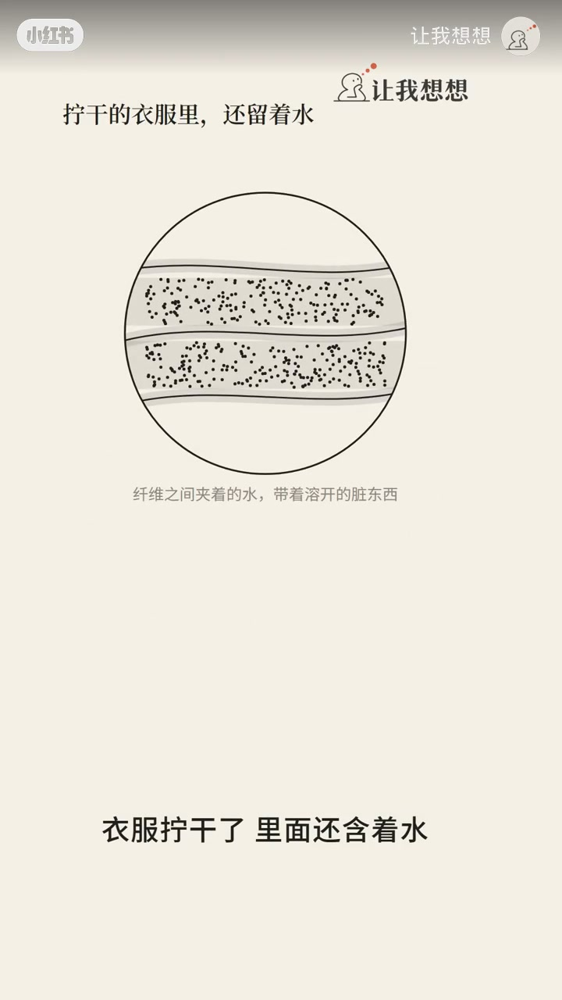
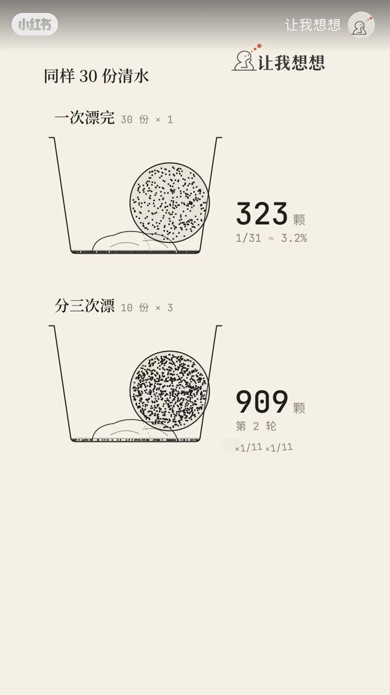
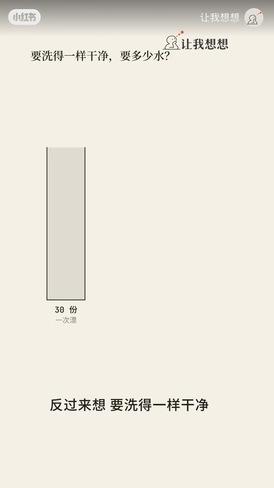
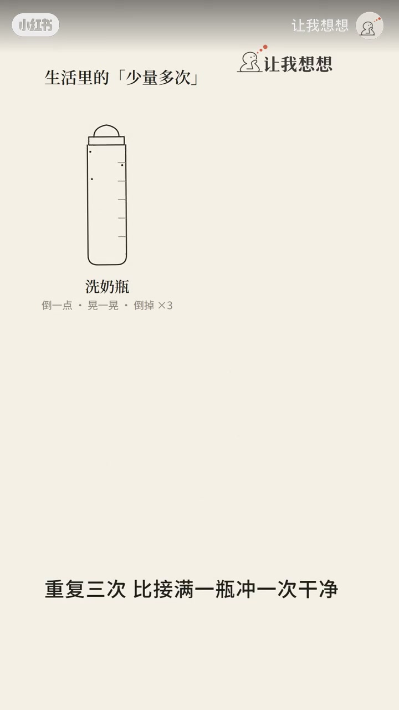
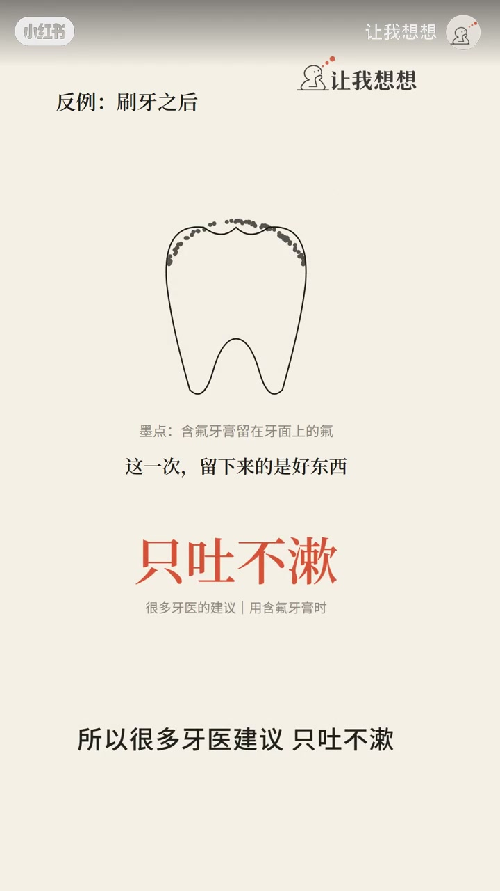
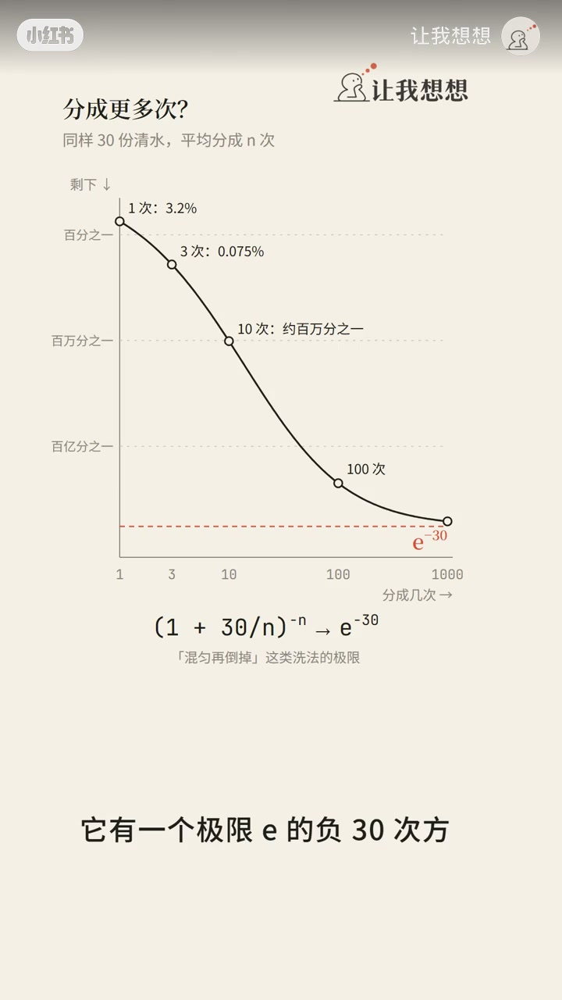

模型：为什么分三次更干净
同样一桶清水漂衣服。理想设定：拧干后衣服里还含着 1 份已混匀的脏水。若一次倒入 30 份清水漂完，脏物浓度变成约 1/31；若拆成三轮、每轮 10 份，每轮倒掉混匀脏水，残留比例连乘，三轮后约 1/1331——同样用水，干净 40 多倍。标题「43 倍」与口播「40 多倍」同量级，属演示取整。

[00:08] 同样 30 份清水：分三次漂 vs 一次倒完——脏物残留差一个数量级
Same 30 units of water: three rinses vs one dump—residue differs by an order of magnitude.

[00:35] 三轮后约剩 1/1331，同样用水干净 40 多倍；秘密是每次倒掉混匀脏水
After three rounds ≈1/1331 left—40× cleaner; each pour removes mixed dirty water.

[00:55] 反过来：要同样干净，分三次约 6.4 份水，省近八成
Conversely: same cleanliness needs only ~6.4 units in three rounds—save ~80% water.

[01:15] 洗衣机漂甩循环、奶瓶/毛笔少量多次，都是同一原理
Washer rinse–spin cycles and rinsing bottles/brushes follow the same idea.

[01:35] 边界：含氟牙膏不要少量多次漱口；真实洗衣有吸附与混匀时间
Boundary: don’t multi-rinse fluoride toothpaste; real laundry has adsorption and mix time.

[02:00] 分再多次也到不了 0；极限与自然常数 e 相关
Even 100 splits never reach 0; the limit ties to constant e.
反过来省水，以及生活迁移
要达到同样干净，分三次大约只要 6.4 份水，省近八成。洗衣机「漂一次、甩一次」多轮，就是在逼近「少量多次」。洗奶瓶倒一点水晃倒三次，往往比灌满冲一次干净；毛笔三小杯甩干，也常好过大盆一冲。
适用条件：脏物能混进水里，且倒完还会留下一层水。边界：刷完牙别对含氟牙膏搞少量多次漱口——糊要留在牙上，很多牙医建议只吐不漱。真实洗衣还有洗衣液吸附纤维、搅拌混匀时间，模型偏理想。
分到 10 次约剩百万分之一，分 100 次也到不了 0；极限与自然常数 e 相关——口播借洗衣服把 e 拽进日常。